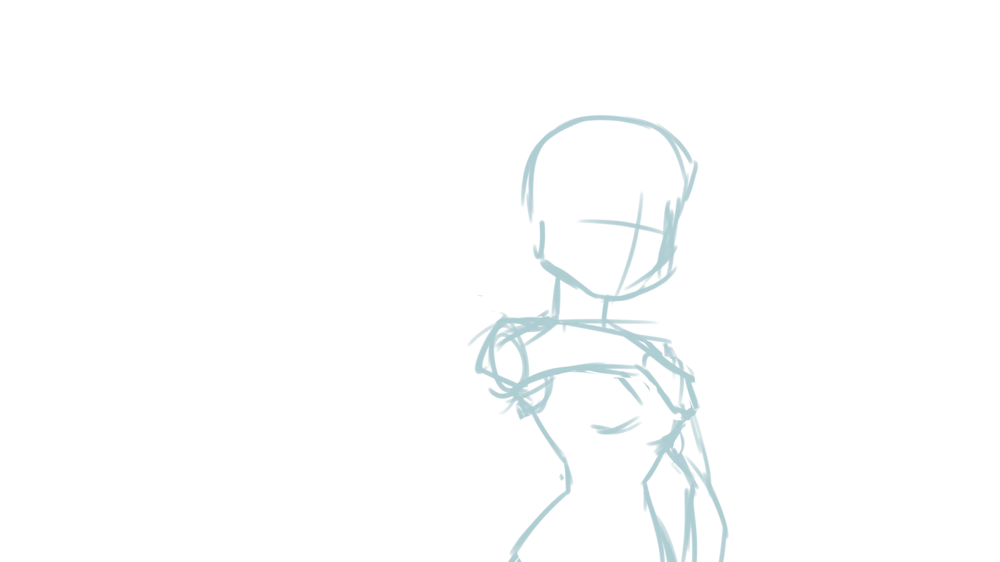
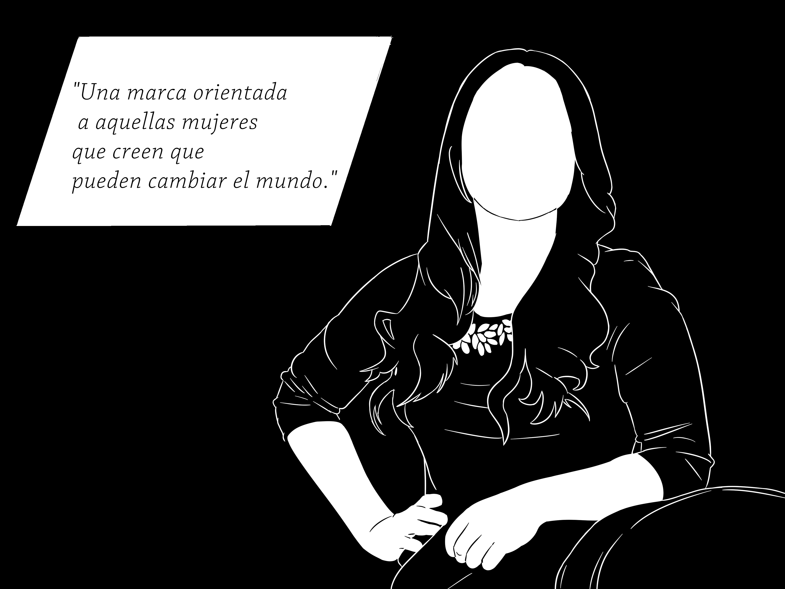

Presentacion de Trabajos Previos Variados
Este trabajo tomo bastante tiempo en el aspecto de ingenio, tener que pensar en un animatic que sea simple de entender y facil de dibujar toma bastante tiempo, y diria yo que mas que dibujar y editarlo.
Este trabajo lo realize usando Paint Tool Sai2 para los dibujos y Animate CC para ponerlos juntos como video. No es de mis mejores trabajos, pero me gustan los disenos.
La historia sigue a un caballero que para atravesar un campo tiene que elegir entre tres caminos, cada uno guardado por una bestia intimidante. Esto hace que el caballero quiera decidir entre uno de los tres,lo cual lo hace sentirse como el menos intimidante, y causa conflicto entre las bestias.
Representacion de Infografia de Bleach

Esta es una infografia sobre la seria Japonesa Bleach, hecha para la clase de Diseno Visual de Informacion. El proposito era poder mostrar informacion de manera visual, osea de manera grafica.
La infografia muestra los personajes de la serie y las varias peleas que han tenido entre ellos. Muestra quien peleo contra quien y como resultaron dichas peleas.
Cubo
Una de las animaciones mas viejas que tengo es un cubo moviendose. Fue hecha en una aplicacion de celular ya que para entonces no tenia tableta.
Me parece simpatico.
Logo Music
Logo creado para una clase, es un logo para una tienda de musica.
Practica de Movimiento
Un pequeno boceto de una persona haciendo uncorto movimiento de brazo.
Todavia esta en proceso de terminado.
Danganronpa
Una compilacion de personajes de una obra de la serie Danganronpa.
Este trabajo fue hecho para la clase te Taller de Caracterizacion y para hacerlo, tuve que agregar un background completamente blanco por imagen de cada presona, agregar todos los elementos en Photoshop y luego pasarlos a After Effects para animarlos, finalmente unirlo todo en Adobe Premiere y renderizarlo en Media Encoder.
Comic


Un pequeno comic hecho para la clase de guion grafico y animatic.
La histria empieza viendo una escena del crimen, en la que podemos ver una billetera vacia en la mano de la victima. Despues encontramos al personaje principal quien es la victima en forma de fantasma.
El fantasma embarca en una mision para buscar a quien lo asesino, pero su objetivo no es venganza ni para conseguir su dinero de vuelta, sino para conseguir su anillo de bodas y que pueda morir con el en su dedo.
El proposito de este trabajo fue dar a entender una historia con buena estructura y con elementos necesarios, y a la vez tener una estructura narrativa coherente.
Milena
Para este trabajo tuvimos que manejar la cuenta de Twitter de Milena, teniendo casi nada de experiencia con redes sociales me tome la libertad de realizar dibujos para su marca.
La idea era hacer un vectorizado de imagenes de Milena o de su gusto, pero mi destreza para utilizar vectores y/o paciencia para utilizar programas de Adobe me dejo la opcion de hacer las imagenes a trazo o pulso en Paint Tool Sai.
Milena
Un trabajo hecho para la clase de gestion de contenido. Es un esqueleto saltando, hecho para celebrar el dia de los muertos en el Twitter del Bache Blog.